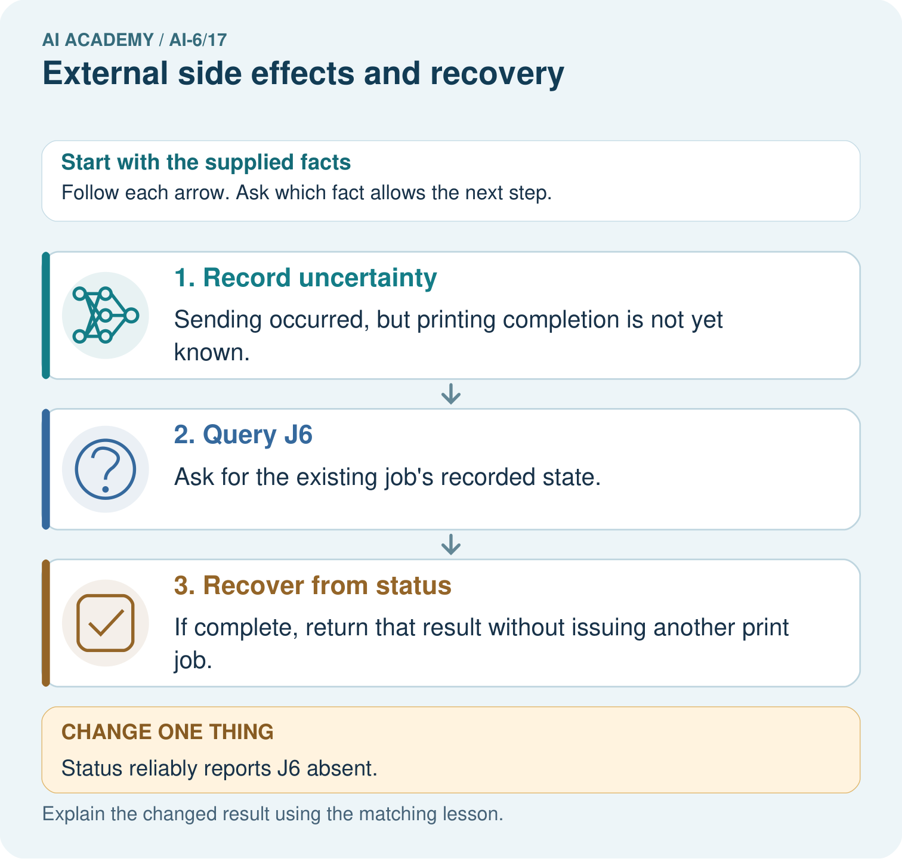
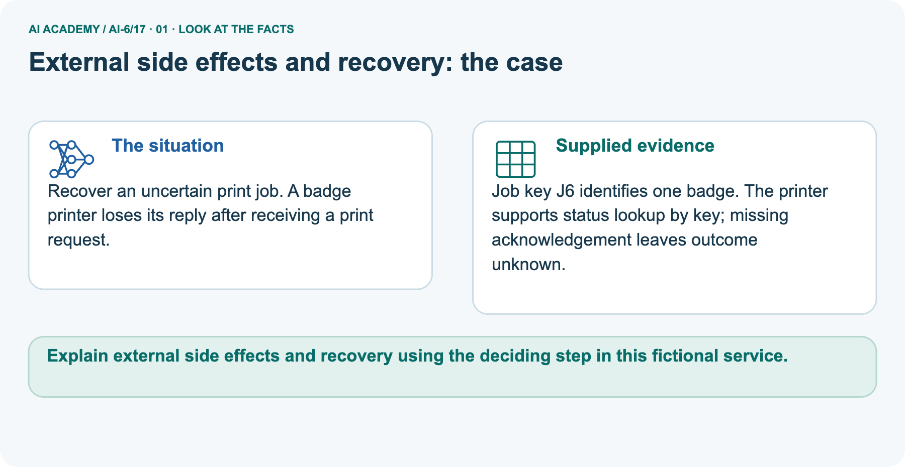
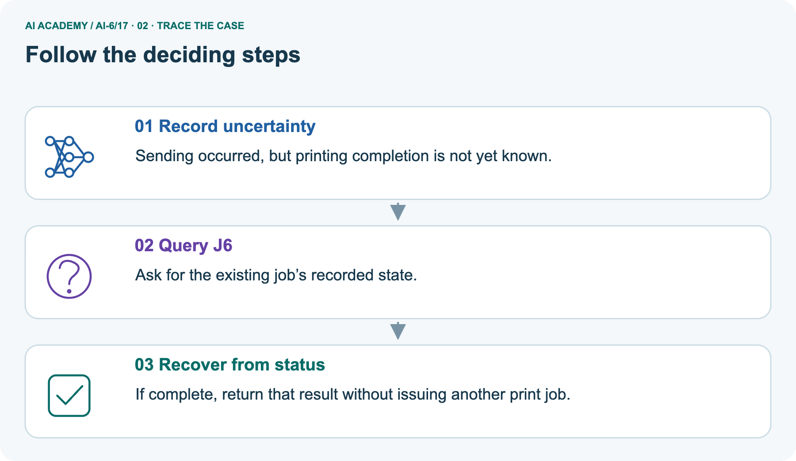
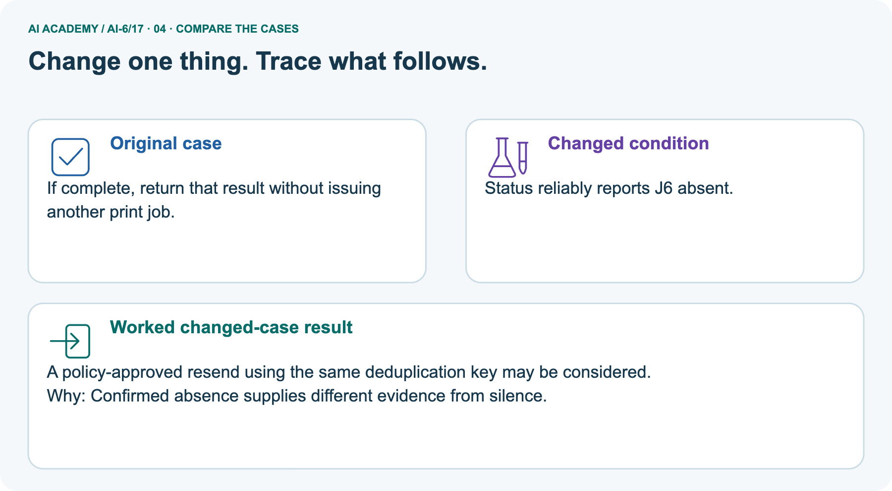
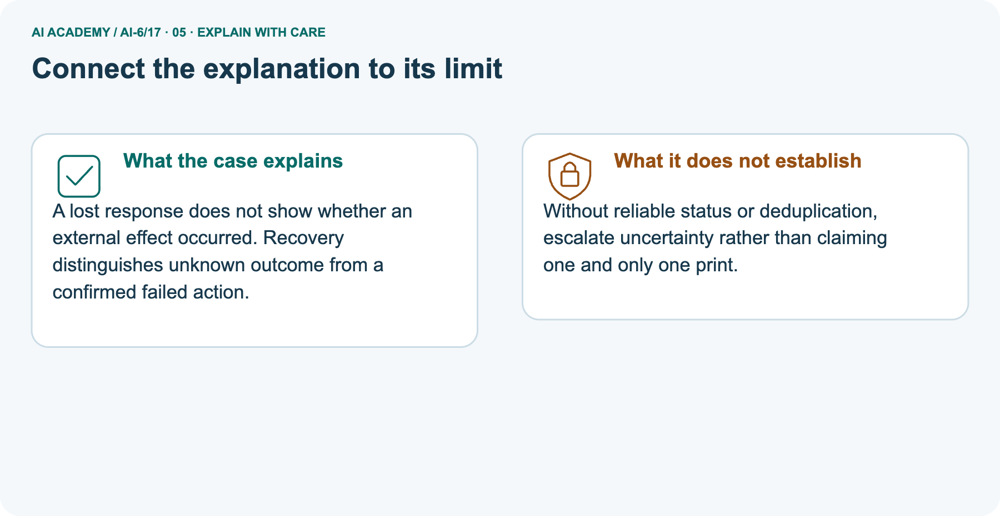
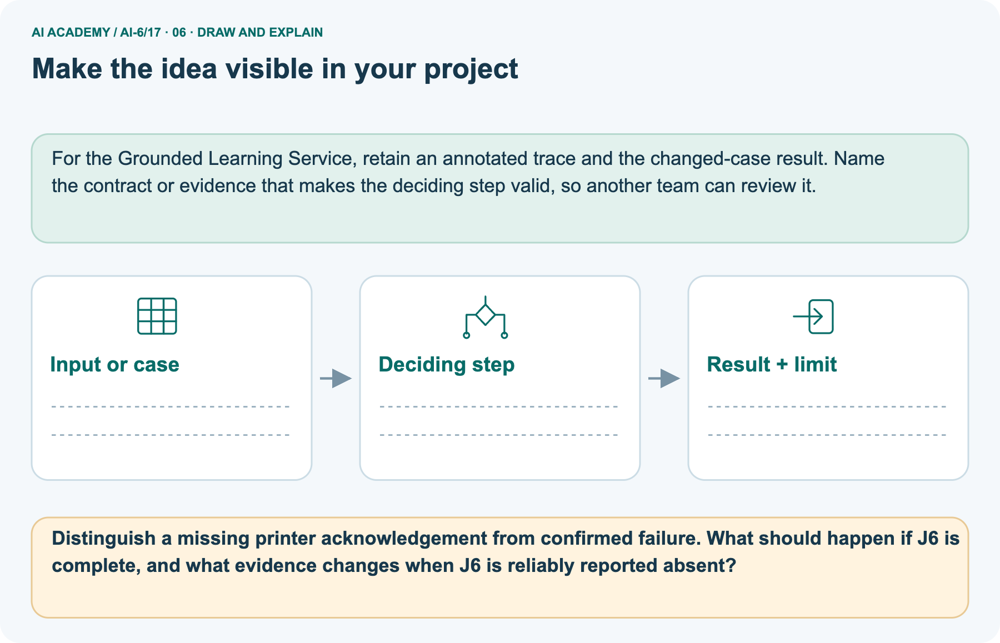

AI Academy · Level 6 · Grade 11 · Week 17 · Workbook
External side effects and recovery
Learn to understand, design, build, test and explain AI systems responsibly.
Project: Grounded Learning Service
THE CONNECTED WEEK
One complete external-effect recovery decision record.
Keep stable identity, status evidence, uncertainty, read permission, resend conditions and separate compensation authority together.
Keep one habit: Recall → W1–W3/W5 → independent uncertainty case → project recovery record → delayed return.
Main lesson · Section 1
Recall · Retrieve before notes
Keep this task’s inputs,rule and response together.
Complete task and evidence
Try the recall before opening notes. Then use a different colour or a labelled second line to correct your explanation.
Without opening the old lesson, explain one key idea from Timeouts retries and cancellation. Give an example and a mistake that the idea helps you avoid.
Without opening the old lesson, explain one key idea from Planning and action selection. Give an example and a mistake that the idea helps you avoid.
Without opening the old lesson, explain one key idea from Failure budgets and service objectives. Give an example and a mistake that the idea helps you avoid.
Use this reference for the original W1–W3 and W5 exercises. The separately named independent case supplies its own changed facts; use those facts for that attempt before feedback.
External effects can succeed while their acknowledgement is lost. Recovery must inspect committed state before repeating the operation.
The mock ledger records prepared, committed or unknown per operation ID. Retry a committed operation by returning its result; reconcile unknown status instead of assuming failure.
Preserve compensation as a separate authorised action.
Timeouts retries and cancellation
Planning and action selection
Failure budgets and service objectives
Lesson reference for workbook practice
Main lesson · Section 5
W1 · Explain the current example
Keep this task’s inputs,rule and response together.
Complete task and evidence
Main fixture BOOK-1 is reliably committed with existing booking result B1, but its acknowledgement was lost. Reconcile by original operation ID and return the existing result to an authorized caller; do not create a second effect. A prepared state is not confirmed failure. Unknown/unavailable or unreliable/mismatched status remains review/uncertainty.
Separate printer J6 has an unknown outcome after a lost reply; reliable completion returns its existing result, while reliable absence changes evidence but does not itself grant resend permission. Only separately trusted same-key resend authority with required provider duplicate controls yields a candidate; no resend executes here.
Compensation such as cancellation is another action with its own exact approval and new operation identity, preserving original history. The local helper assumes supplied authoritative/access flags and classroom approval equality, copies returned results and leaves original records unchanged. It performs no real status lookup, print, booking, transfer or durable/exactly-once recovery.
Explain the weekly mechanism in your own words. Use the worked scenario to name its input, decision rule and output.
Main lesson · Section 6
W2 · Trace the calculation
Keep this task’s inputs,rule and response together.
Complete task and evidence
Main fixture BOOK-1 is reliably committed with existing booking result B1, but its acknowledgement was lost. Reconcile by original operation ID and return the existing result to an authorized caller; do not create a second effect. A prepared state is not confirmed failure. Unknown/unavailable or unreliable/mismatched status remains review/uncertainty.
Separate printer J6 has an unknown outcome after a lost reply; reliable completion returns its existing result, while reliable absence changes evidence but does not itself grant resend permission. Only separately trusted same-key resend authority with required provider duplicate controls yields a candidate; no resend executes here.
Compensation such as cancellation is another action with its own exact approval and new operation identity, preserving original history. The local helper assumes supplied authoritative/access flags and classroom approval equality, copies returned results and leaves original records unchanged. It performs no real status lookup, print, booking, transfer or durable/exactly-once recovery.
A booking is committed in storage, but response delivery times out. Caller asks to repeat. Show the intermediate steps and give the conclusion with its scope.
Main lesson · Section 7
W3 · Repair a misconception
Keep this task’s inputs,rule and response together.
Complete task and evidence
Main fixture BOOK-1 is reliably committed with existing booking result B1, but its acknowledgement was lost. Reconcile by original operation ID and return the existing result to an authorized caller; do not create a second effect. A prepared state is not confirmed failure. Unknown/unavailable or unreliable/mismatched status remains review/uncertainty.
Separate printer J6 has an unknown outcome after a lost reply; reliable completion returns its existing result, while reliable absence changes evidence but does not itself grant resend permission. Only separately trusted same-key resend authority with required provider duplicate controls yields a candidate; no resend executes here.
Compensation such as cancellation is another action with its own exact approval and new operation identity, preserving original history. The local helper assumes supplied authoritative/access flags and classroom approval equality, copies returned results and leaves original records unchanged. It performs no real status lookup, print, booking, transfer or durable/exactly-once recovery.
A report omits this qualification: A compensating action is itself a side effect requiring authority; recovery does not silently permit deletion or refund.
Explain how omitting it could change a reader's interpretation, and write an accurate replacement.
Main lesson · Section 9
W5 · Explain the limitation
Keep this task’s inputs,rule and response together.
Complete task and evidence
Main fixture BOOK-1 is reliably committed with existing booking result B1, but its acknowledgement was lost. Reconcile by original operation ID and return the existing result to an authorized caller; do not create a second effect. A prepared state is not confirmed failure. Unknown/unavailable or unreliable/mismatched status remains review/uncertainty.
Separate printer J6 has an unknown outcome after a lost reply; reliable completion returns its existing result, while reliable absence changes evidence but does not itself grant resend permission. Only separately trusted same-key resend authority with required provider duplicate controls yields a candidate; no resend executes here.
Compensation such as cancellation is another action with its own exact approval and new operation identity, preserving original history. The local helper assumes supplied authoritative/access flags and classroom approval equality, copies returned results and leaves original records unchanged. It performs no real status lookup, print, booking, transfer or durable/exactly-once recovery.
For the worked scenario, propose one additional case that could reveal a failure, describe its expected outcome before running it, and explain what would need to remain fixed for a fair comparison.
Do not reuse W4 as a new final test after receiving feedback.
Main lesson · Section 4
Try alone · Selected transfer
Keep this task’s inputs,rule and response together.
Complete task and evidence
A payment-like classroom token transfer has unknown status after network loss. Should the mock repeat immediately?
Attempt this case before feedback. Record any help. Earlier examples below are further practice; a case already practised with feedback cannot establish fresh transfer.
Independent case: Apply a new case independently
Main lesson · Section 10
Project · Keep the service evidence
Preserve the contract, inputs, observed outcomes and limits.
Complete task and evidence
Add a labelled external side effects and recovery evidence sheet to Grounded Learning Service. Show how you can explain the mechanism and terminology of external side effects and recovery.
Use the supplied fictional case and keep its inputs, intermediate steps, calculation or prediction, and limitation. Connect this record to last week’s record; a matching answer without a trace is insufficient.
Main lesson · Section 11
Feedback · Repair and return
Keep this task’s inputs,rule and response together.
Complete task and evidence
Revisit this idea with your teacher after a delay. Familiarity is different from explaining and using it on a changed case.
| Evidence | My record |
|---|---|
| Worked alone / hint / model | |
| First step I repaired and why | |
| New case checked later; date and result | |
| What I can now explain without notes | |
| One remaining question |
Reference bank and extra practice
Choose the reference that helps your next step.
Reference · Supported W2 record
Reference · Section 2
Reference · Supported W2 record
Keep this task’s inputs,rule and response together.
Complete task and evidence
Use W2: Trace the worked case for External side effects and recovery. Record the answer once; the lesson and workbook refer to the same attempt.
| Given inputs | Procedure I chose | Middle steps | Result and check |
|---|---|---|---|
Extra practice · Individual reasoning check
Reference · Section 3
Extra practice · Individual reasoning check
Keep this task’s inputs,rule and response together.
Complete task and evidence
Use the worked case for External side effects and recovery. Proposed explanation: “The worked result establishes every future case”. Decide whether this explanation is supported.
Point to the step or supplied fact that decides; explain your repair if needed.
Reference · Earlier W4 response copy
Reference · Section 8
Reference · Earlier W4 response copy
Keep this task’s inputs,rule and response together.
Complete task and evidence
A payment-like classroom token transfer has unknown status after network loss. Should the mock repeat immediately?
Extra practice · Pictured case
Reference · Section 12
Extra practice · Pictured case
Keep this task’s inputs,rule and response together.
Complete task and evidence
Recover an uncertain print job. A badge printer loses its reply after receiving a print request.
Job key J6 identifies one badge. The printer supports status lookup by key; missing acknowledgement leaves outcome unknown.
Distinguish a missing printer acknowledgement from confirmed failure. What should happen if J6 is complete, and what evidence changes when J6 is reliably reported absent?
Support used: alone / hint / worked example. This record is practice evidence.
Project connection: For the Grounded Learning Service, retain an annotated trace and the changed-case result. Name the contract or evidence that makes the deciding step valid, so another team can review it.



Reference · Project milestone
Reference · Section 13
Reference · Project milestone
Keep this task’s inputs,rule and response together.
Complete task and evidence
Project: Grounded Learning Service
Current milestone: Test changed cases. Keep normal, boundary and failure cases; compare expected and observed results.
For the Grounded Learning Service, retain an annotated trace and the changed-case result. Name the contract or evidence that makes the deciding step valid, so another team can review it.
| Evidence to keep | My record |
|---|---|
| This week’s input and deciding step | |
| Prediction and actual result (or labelled paper trace) | |
| One change since the previous checkpoint and why | |
| One error or limit and the next test |
Extra practice · Predict,check and repair
Reference · Section 14
Extra practice · Predict,check and repair
Keep supported feedback separate from the independent case.
First supported question and optional hint
Recover an uncertain print job. A badge printer loses its reply after receiving a print request.
Which labelled step matches this detail? If complete, return that result without issuing another print job.
1. Record uncertainty
2. Recover from status
3. Query J6
Hint if needed: Read the steps in the pictorial case. Match the supplied detail to the stage that performs or records it.
Practice 1: explain the deciding evidence
Check after the first attempt
After your attempt, compare with the supported explanation: Recover from status If complete, return that result without issuing another print job. A lost response does not show whether an external effect occurred.
Recovery distinguishes unknown outcome from a confirmed failed action.
Changed-case question and optional hint
Changed-case practice: Status reliably reports J6 absent. Which conclusion is supported by the supplied facts?
1. This one example guarantees correct results for every future input.
2. A policy-approved resend using the same deduplication key may be considered.
3. We can decide the result without examining the changed input or the procedure.
Hint if needed: Use the changed condition and the deciding step in the pictorial trace. The answer must say what follows from those facts.
Practice 2: explain the deciding evidence
Check after the changed attempt
After your attempt, compare with the supported explanation: A policy-approved resend using the same deduplication key may be considered. Confirmed absence supplies different evidence from silence.
Repair and retain the record
Review Timeouts retries and cancellation (ai-6/16). Goal: Explain the mechanism and terminology of timeouts retries and cancellation.
Short practice: Calculate waiting time for a one-second timeout followed by a 0.4-second success. What changes if cancellation arrives after the first attempt but before the retry?.
Return to this week and explain what you changed.
Review Planning and action selection (ai-6/14). Goal: Explain the mechanism and terminology of planning and action selection. Short practice: Choose a permitted plan when no approved tower-height card exists.
What new answer becomes supported after a card records 24 metres, and why could the bot not invent it earlier?. Return to this week and explain what you changed.
Review Failure budgets and service objectives (ai-6/11). Goal: Explain the mechanism and terminology of failure budgets and service objectives. Short practice: Calculate the maximum allowed failures among 100 requests.
Does 97 successes and 3 failures meet the target, and what changes after one failure becomes a success?. Return to this week and explain what you changed.
Use Download completed work in the hosted lesson to export your answers, reflections, practice feedback and code-run evidence. Open the HTML copy to read or print it.
Drafts stay in this browser when storage is available; clear drafts on a shared device.
Earlier wording, alternatives and picture transcripts
Use this supported practice once, in the browser or on paper. Keep the reserved independent assessment for a separate first attempt before teacher feedback.
Repair a missing building block
Keep your completed work
Reference · Six-picture response sheets
Reference · Section 15
Reference · Six-picture response sheets
Choose the picture that helps explain the current step.
01. External side effects and recovery: the case



Recover an uncertain print job. A badge printer loses its reply after receiving a print request. Supplied facts: Job key J6 identifies one badge.
The printer supports status lookup by key; missing acknowledgement leaves outcome unknown.
Point to the given fact that matters most. Explain why it matters.
02. Follow the deciding steps



Record uncertainty: Sending occurred, but printing completion is not yet known. → Query J6: Ask for the existing job’s recorded state. → Recover from status: If complete, return that result without issuing another print job.
Point to each numbered stage and explain which recorded input it uses.
03. External side effects and recovery — evidence trace
![External side effects and recovery — evidence trace. A booking is committed in storage, but response delivery times out. Caller asks to repeat. | The mock ledger records prepared, committed or unknown per operation ID. Retry a committed operation by returning its result; reconcile unknown status instead of assuming failure. Preserve compensation as a separate authorised action. | Lookup the operation ID and return the committed booking; do not create a second booking. A lost acknowledgement does not undo the effect.](../assets/academy-story-ai-6-17-03.png)

External side effects and recovery — evidence trace. A booking is committed in storage, but response delivery times out. Caller asks to repeat. | The mock ledger records prepared, committed or unknown per operation ID.
Retry a committed operation by returning its result; reconcile unknown status instead of assuming failure.
Preserve compensation as a separate authorised action. | Lookup the operation ID and return the committed booking; do not create a second booking. A lost acknowledgement does not undo the effect.
Read the labels and values. Explain the relationship the model shows.
04. Change one thing. Trace what follows.



Original case: If complete, return that result without issuing another print job. Changed condition: Status reliably reports J6 absent.
Expected result: A policy-approved resend using the same deduplication key may be considered. Reason: Confirmed absence supplies different evidence from silence.
Predict before checking the worked changed-case result. Name what changed and what the supplied facts allow you to conclude.
05. Connect the explanation to its limit



A lost response does not show whether an external effect occurred. Recovery distinguishes unknown outcome from a confirmed failed action.
Limit: Without reliable status or deduplication, escalate uncertainty rather than claiming one and only one print.
Explain the case, then point to a limit on the claim.
06. Make the idea visible in your project



For the Grounded Learning Service, retain an annotated trace and the changed-case result. Name the contract or evidence that makes the deciding step valid, so another team can review it.
Draw your input, deciding step, result and limit. Supported question: Distinguish a missing printer acknowledgement from confirmed failure.
What should happen if J6 is complete, and what evidence changes when J6 is reliably reported absent?
Draw your project trace and justify the deciding step using evidence.